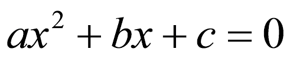

Funciones
Crear funciones propias nos puede ayudar a:
- Evitar repeticiones de código: siempre que se utilice copiar y pegar, es una buena indicación de que debería pensar en escribir una función.
- Facilitar la reutilización: siempre que se deban usar fragmentos de código similares en diferentes partes del código, o incluso en diferentes scripts/proyectos.
- Imponer estructura: las funciones le ayudan a estructurar su código y evitar scripts largos y/o complejos.
- Facilitar la depuración: permite un control de calidad exhaustivo para partes importantes del código (probar su función para asegurarse de que funcionan como se espera).
Componentes de una función
mifuncion <- function(argumento1, argumento2, ...) {
cuerpo
retorno
}
- Nombre de la función: este es el nombre real de la función. Se almacena en el entorno R como un objeto con este nombre.
- Argumentos: Cuando se invoca una función, se pasa un valor al argumento. Los argumentos son opcionales; es decir, una función puede no contener argumentos. Además, los argumentos pueden tener valores predeterminados.
- Cuerpo de la función: el cuerpo de la función contiene una colección de declaraciones que define lo que hace la función.
- Valor de retorno: el valor de retorno de una función es la última expresión en el cuerpo de la función que se evaluará.
## Crear una fuincion para sumar dos numeros
mi_suma <- function(x, y){
x + y
}
## Probamos la funcion sumando 3 + 7
mi_suma(3, 7)
En el ejemplo anterior solo se ejecutó una operación dentro de la función, por lo cual, el resultado aparecerá sin necesidad de pedir el retorno del resultado.
Si existen más de dos operaciones dentro de la función será necesario decirle cual o cuales resultados tiene que devolver con la función return().
## Crear una fuincion para sumar dos numeros y elevar al cuadrado el reultado
mi_suma <- function(x, y){
## Sumar dos numeros
suma <- x + y
## Elevear al cuadrado el resultado de la suma
cuadrado <- suma^2
## Que devuelva el resultado de las dos opreaciones suma y cuadrado
return(c(suma, cuadrado))
}
## Probamos la funcion sumando 3 + 7
mi_suma(3, 7)
También se puede utilizar texto en los argumentos y combinarlo con el resultado numérico, esto se realiza utilizando la función paste() (con espacio) o paste0() (sin espacio) para pegar el texto con un número y la función print() para mostrar el resultado.
## Crear una fuincion para sumar dos numeros y elevar al cuadrado el reultado
mi_suma <- function(mensaje, x, y){
## Sumar dos numeros
suma <- x + y
## Que devuelva el mensaje y el resultado de la suma
print(paste(mensaje, suma))
}
## Probamos la funcion sumando 3 + 7
mi_suma("El resultado es", 3, 7)
Ecuación de segundo grado, "la fórmula chicharronera".
Consideremos la ecuación general de segundo grado (ecuación cuadrática) que tiene la forma:
podemos encontrar sus raíces mediante el método de factorización; si no, se utiliza la fórmula general o también llamada, “la chicharronera”:

Crear una función que calcule las raíces a partir de "la fórmula chicharronera"
## Funcion "chicharronera"
chicharronera <- function(a, b, c){
x1 <- ((-b) + sqrt((b^2) - (4*a*c))) / (2*a)
x2 <- ((-b) - sqrt((b^2) - (4*a*c))) / (2*a)
print(paste("X1 =", x1))
print(paste("X2 =", x2))
}
Encontrar las raíces de la siguiente ecuación utilizando la función chicharronera().
## Encontrar las raices de la ecuacion cuadratica anterior
a <- 3
b <- -11
c <- -4
chicharronera(a, b, c)
Como crear funciones con los paquetes de Tydiverse.
Vamos a crear un gráfico que contenga un boxplot, un histograma y un QQ-plot. Estos gráficos se utilizan para conocer el comportamiento de los datos y conocer principalmente si nuestros datos se ajustan a una distribución normal.
- Un diagrama de Caja-Bigotes (boxplots o box and whiskers) es una presentación visual que describe varias características importantes, al mismo tiempo, tales como la dispersión y simetría.
- Un histograma es una representación gráfica de una variable en forma de barras, donde la superficie de cada barra es proporcional a la frecuencia de los valores representados. Sirven para obtener una "primera vista" general, o panorama, de la distribución de la población, o de la muestra, respecto a una característica, cuantitativa y continua (como la longitud o el peso).
- un gráfico Q-Q ("Q" viene de cuantil) es un método gráfico para el diagnóstico de diferencias entre la distribución de probabilidad de una población de la que se ha extraído una muestra aleatoria y una distribución usada para la comparación. Un ejemplo del tipo de diferencias que pueden comprobarse es la no-normalidad de la distribución de una variable en una población.
## Esta funcion crea un un gráfico que contenga un boxplot, un histograma y un QQ-plot
## Cargamos los paquetes que vamos a utilizar
library(dplyr)
library(ggplot2)
library(qqplotr)
library(egg)
box_hist_qq_plot <- function(data, var_fact, level, var_num){
## Con dplyr vamos a filtrar el nivel de la variable factor y asignarlo a la variable sp
## para los paqueteria tydiverse el nombre de las columnas o variables van entre dos llaves {{}}
sp <- data %>%
filter({{var_fact}} == level)
## Crear el boxplot
box_p <- ggplot(data = sp, aes(y = {{var_num}})) +
geom_boxplot()
## Crear el histograma
hist_p <- ggplot(data = sp, aes({{var_num}})) +
geom_histogram(aes(y = ..density..), bins = 11)
## Crear el QQ-plot
qq_p <- ggplot(data = sp, aes(sample = {{var_num}})) +
stat_qq_band(alpha = 0.5) +
stat_qq_line() +
stat_qq_point()
## Fusionar los graficos en una sola figura
figura <- ggarrange(box_p, hist_p, qq_p, labels = c("A", "B", "C"), ncol = 2, nrow = 2)
return(figura)
}
Vamos a probar la función box_hist_qq_plot() que creamos, utilizando la base de datos iris.
## Realizar el grafico de boxplot, histograma y QQ-plot para la especie virginica
## y la variable Petal.Width de la base de datos iris
box_hist_qq_plot(data = iris, var_fact = Species, level = "virginica", var_num = Petal.Width)
Guardar y llamar funciones con la función source().
Como vimos al principio crear una función nos ayuda a estructurar nuestro código y evitar scripts largos y/o complejos. Esto se logra al guardar las funciones y después llamarlas en nuestro nuevo script con la función source(). Como ejemplo utilizaremos la función box_hist_qq_plot() que creamos anteriormente, en RStudio guardamos la función en la carpeta bin (recomiendo utilizar .r para scripts y .R para funciones).
## Realizar el grafico de boxplot, histograma y QQ-plot para el mes 5
## y la variable Wind de la base de datos airquality
## llamar la funcion box_hist_qq_plot
source("box_hist_qq_plot.R")
box_hist_qq_plot(data = airquality, var_fact = Month, level = 5, var_num = Wind)